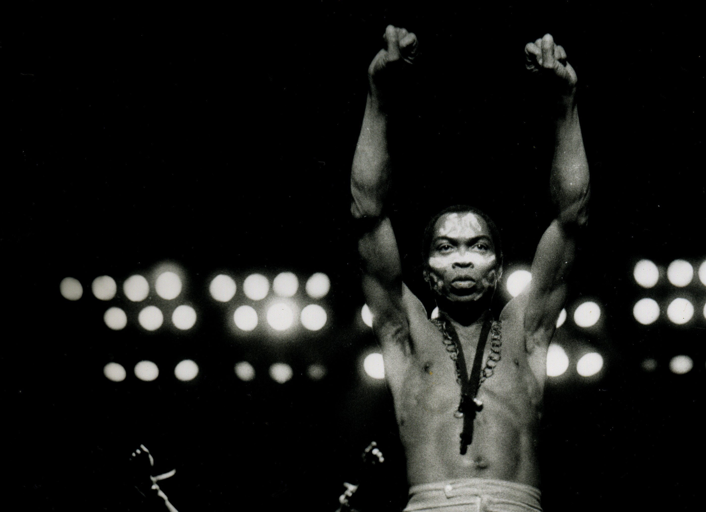

Olufela Olusegun Ransome-Kuti
Nigerian musician and activist who launched a modern style of music called Afro-beat, which fused American blues, jazz, and funk with traditional Yoruba ... 
The Legendary Fela Kuti